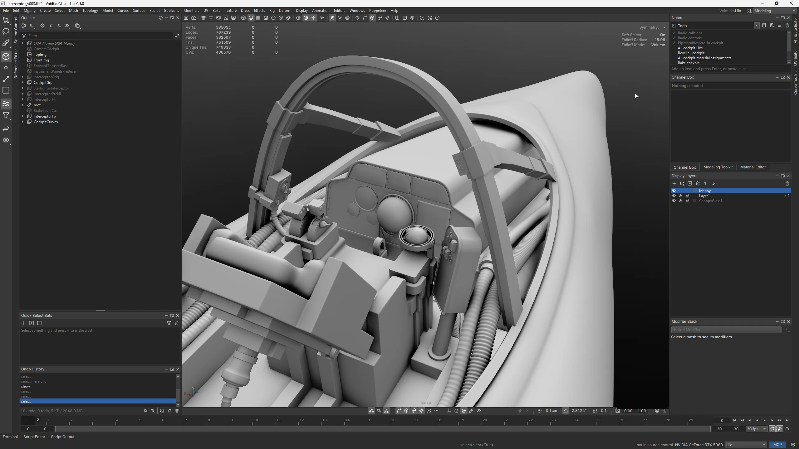

Lila takes its UX and workflow from Maya, then rebuilds everything else for game developers: a modern stack, real multithreading, and high-end tools across the board.
Model, retopologise, unwrap, bake, paint, rig, animate and build whole worlds in one app, then send it all to Unreal. It fits a solo indie as well as a AAA studio's full production pipeline, and every part of it is built to be extended.
Faster than Maya
Timed against Maya 2026.3 on the same machine and files. Maya still wins some rows, and every result is published.
Click to enlarge
-
8.1x
Imports a 13.5-million-triangle scene
OBJ: 6.8 s in Lila, 55.3 s in Maya. FBX: 6.0 s in Lila, 48.7 s in Maya. Both until it's on screen.
-
3.9x
Saves text scenes for source control
The same scene as a text file: 5.0 s in Lila, 19.5 s in Maya as .ma. Opening it is 3.5x faster too.
-
120x
Gets 6.75 million points into numpy
Against Maya's fastest route. Its usual API takes 13.7 s.
-
0
Crashes and hangs
Maya crashed once and hung three times on the same tests.
-
64-bit
No lost digits
Vertices are stored in double precision, so CAD meshes and huge worlds go in and out exactly as they were, even kilometres from the origin. Maya rounds them to 32-bit floats on import.
-
1 app
No lossy hand-offs
Modeling, UVs, baking, texturing, rigging and animation all happen in Lila, so geometry never passes through an export, unit conversion or axis flip between tools.
Your Maya team already knows it
-
Muscle memory transfers
Lila was designed so someone who uses Maya every day can sit down and work. Hotkeys, selection modes, marking menus, the outliner and shelves behave the way their hands expect.
-
So does the knowledge
Years of Maya experience aren't thrown away. Artists keep their workflows, and technical artists keep their command-and-flag habits in Python.
-
Brings its scenes along
Open
.mband.mafiles and convert them to Lila scenes, so there's no restarting from scratch. -
Room for studio tools
Write them as Python or C++ extensions. Their commands are called from scripts like any built-in.
-
Free, with no revenue cap
Use it commercially at any size. What you make with it is yours.
-
Yours to keep
The license is perpetual and binds any future owner of Lila, so an acquisition can't take it away. If Lila ever goes 24 months without a release, its source becomes Apache 2.0.
Want to try it on a real production? Studio pilots are open: get in touch.
Model
Modeling and sculpting
Every tool is designed to save steps: snap a primitive onto a surface, join shapes with a boolean, remesh the result, and let auto-bevel pick the edges.
-
Symmetry that stays exact
Across modeling, UVs, weights and joints. Precision never drifts one side away from the other.
-
Auto-bevel
Lila can pick the edges you'd bevel, so you don't have to select them by hand.
-
Smart booleans
Booleans that leave clean, workable topology behind instead of a mess to fix by hand.
-
Sculpting
Sculpting tools built into modeling, for shaping and refining meshes without leaving Lila.
-
Curves and text
Draw, sweep, loft and pipe curves, and turn any font into curves or a text mesh.
-
Geometry nodes
Procedural modeling in a node graph with keyable inputs.
Retopo
Retopology, by hand and automatic
A full retopology toolkit where hand tools and auto retopo work on the same mesh and hand off to each other. Draw the topology that matters, let Lila fill the rest.
-
Patch
Draw a closed shape and it fills with clean quads. Set the edge count per side with the wheel; Lila keeps the parity so it's always all quads.
-
Strip
Sketch a path and get a strip of square quads along it, with mitred corners and handles to twist and widen it afterwards.
-
Stroke and bridge
Draw edge chains on the surface, bridge two into a grid, or extrude straight from an existing border.
-
Cylinder
Draw lines across a limb and each becomes a ring of the cross-section, bridged to the last. Perfect loops for arms, legs and fingers.
-
Auto region
Mark an area and Lila quad-remeshes just that part, stitched to your hand-made topology at matching density.
-
Guides and live relax
Pencil in flow guides that auto retopo follows, and keep everything relaxing on the surface while you work.
Unwrap
UVs that unwrap well
Auto-unwrap that gives good results, then physics-based tools for the rest.
-
Live relax, flatten and settle
Physics-based tools that move islands while you watch, instead of running and hoping.
-
Paintable modifiers
Paint relax, flatten, smooth boundary and pin exactly where you want them.
-
GPU packing
Rotation, nesting, stacked identical islands, texel density locks and UDIMs.
Bake, texture, render
Baking, texturing and looks
No separate baker, painter or material generator. Bake on the GPU, paint materials onto the mesh, and render it the way it'll look in game, or better.
-
GPU texture baking
Bake every mesh map you need on the GPU in moments, with channel packing and UDIMs.
-
Material nodes
Build procedural materials in a node graph, with every baked mesh map available as an input.
-
3D painting
Paint layers directly on the mesh with materials, not just colours: paint rust and the rust material fills every channel.
-
Cinematic rendering
Hardware ray tracing for shadows, reflections and global illumination, for look-dev and portfolio shots straight out of the viewport.
-
Toon and cel shading
A cel shader with the tools to get the normals right for it: transfer, smooth and edit shading normals until the shadows fall where you want them.
-
Painterly looks
A painterly shading model with ready-made looks, from soft gouache to heavy impasto, and hand-painted pastoral materials.
Rig
Rigging
Automated rigs when you want speed, film-grade control when you don't. Bipeds, quadrupeds, insects and faces.
-
Rig templates
Place a template's markers on a mesh and build joints with its names and orientations. Ships with UE5 Manny.
-
Quadrupeds
Quadruped templates and rig parts for legs, spines and tails, built for animals rather than adapted from humans.
-
Spline IK
Drive a chain along a curve: tails, tentacles, spines and insect legs.
-
Facial rigging
Build face rigs from joints, blend shapes or both, with a control board for animators.
-
Deformers for Unreal
A modern set of deformers, converted to bones or morph targets so what you see in Lila plays in Unreal.
-
No more gimbal lock
Switch any joint between Euler and Quaternion rotation.
Animate
Animation, taken further
Animate on the joints themselves. Grab whatever control is closest to what you mean and it just works.
-
IK and FK at once
Rotate a joint for FK or grab the hand for IK, on the same chain at any moment. There's no switch, no blend channel and nothing to match.
-
Full-body IK
Pin hands, feet and hips anywhere and the whole body follows naturally.
-
Auto-posing
Move a few points and a learned model fills in a believable pose for the rest of the body.
-
Physics animation
Jolt physics for physics-based posing and ragdoll motion, recorded to an additive layer you can keep editing.
-
Secondary motion
Follow-through, lag and wobble for tails, hair and cloth chains, simulated and baked to a layer, loops included.
-
Facial animation
Animate faces from the control board or directly on the face, alongside the body in the same timeline.
-
MotionBricks
NVIDIA's real-time generative motion, built in: steer a character through locomotion and object interactions with smart primitives, then bake it to keys you can keep editing.
-
Space switching
Switch any control's space mid-shot and the pose stays put, keys and all.
-
Inspired by Akeytsu
Rig and Animate modes, foot and hand locks, the Spinner gizmo and a breakdown slider.
Build worlds
Build whole worlds
Terrain, towns, walls, plants and dressed sets, generated, placed with physics and sent to Unreal as instances it can stream.
-
Terrain
Heightfields from noise, images or meshes in geometry nodes, with erosion, sampled and baked for any engine.
-
Settlements
Villages, towns and cities on flat ground or any mesh: roads routed over the terrain, streets grown in a style, blocks, lots and building envelopes.
-
Masonry
Brick and stone walls laid course by course along any curve, in real bonds with bonded corners, as instances of a few shared stones.
-
Set dressing with physics
Settle, push, drop and shake props into place, then check for anything floating, overlapping or about to fall.
-
Plants
Grow trees with recursive branches and leaves, and shrubs whose blades each vary in thickness and lean.
-
Tiling ground
Scatter rocks and debris into a seamlessly tiling patch, ready to bake down to tiling textures.
Simulate
Destruction and crowds
Deterministic simulations you can art-direct, baked and sent to Unreal.
-
Destruction
Fracture anything and let it fall: pieces held by breakable links, simulated with Jolt as a geometry node, baked to vertex animation textures, Alembic or FBX.
-
Crowds
Simulate crowds with MotionBricks moving every agent, bake them, and send them to Unreal.
-
VFX meshes
Build animated meshes with geometry nodes and send them as a Niagara mesh flipbook or an Alembic cache.
Scan, survey, CAD
Digital twins and big worlds
Unreal's Large World Coordinates and Cesium are both double precision, but the DCC sitting between them and the source data usually isn't. Lila is, end to end.
-
Double precision throughout
Positions stay exact from import to Unreal, whether it's a mine site, a city block or a planet-scale world.
-
Camera-relative rendering
The viewport draws relative to the camera, so geometry thousands of kilometres out doesn't jitter or tear.
-
Georeferencing
Keep a scene's real-world origin and coordinate system, and round-trip it with the source data.
-
Point clouds
Import E57 and LAS/LAZ scans from terrestrial and airborne LiDAR.
-
Photogrammetry and BIM
Photogrammetry OBJ with its offset file, as RealityScan and Metashape write it, and IFC for AEC and CAD visualisation.
-
Your tools on top
Drone survey, civil, mining and infrastructure teams build their own processing on the Python API and C++ SDK.
Unreal
Live Unreal pipeline
Send a mesh to Unreal once. From then on every save reimports it, with no export and import dance.
-
Instances that stay instances
Each shared mesh becomes one static mesh asset, placed as actors or as a HISM component once a group gets large.
-
Collision meshes
Generate correctly oriented bounding meshes. Use them as
UCX_starting points or as-is. -
Textures and materials too
Baked and painted texture sets arrive as material instances, and only changed tiles are re-sent.
-
Skeletal meshes and animation
Rigs, skins, morph targets and takes go over as skeletal meshes and animation sequences.
-
Every format you need
For everything that isn't Unreal, or comes from somewhere else.
-
Unreal-style math
lila.mathgives PythonVector,Rotator,QuatandTransformthat behave like Unreal's, and one call converts to and from Unreal space.
- FBX
- OBJ
- USD
- glTF
- Alembic
- Maya .ma/.mb
- E57
- LAS/LAZ
- IFC
- PLY
- STL
- DXF
Working in Lila
-
Modern viewport
A Vulkan renderer built for realtime: image-based lighting, clean anti-aliasing, a neutral backdrop that doesn't skew your colours.
-
Find any tool
Press Ctrl+T and type. Or call your shelf up at the cursor, so your tools are right where you're working.
-
Shareable parameter windows
Build a custom parameter window, then copy it as text or export it for someone else to use.
-
Agentic workflows
A built-in MCP server lets AI agents drive the same commands you do. Describe an effect and an agent builds the geometry node graph for it.
Scripting and extensions
-
Python without the ceremony
No imports or namespaces, just the command.
-
A real script editor
Completion, auto-format, inline docs and relative line numbers. You won't miss an external IDE.
-
Batch over whole directories
Need to change, or gather data from, 100 scenes? Script it once, then run it over a directory with powerful file filtering.
-
Change stream
Other apps and services subscribe to scene changes as they happen, for live links and pipeline tools.
-
Declarative UI
Build tool windows from Python without wrestling a layout system.
-
C++ extensions
Write extensions against a published SDK. Terrain, Settlement, Masonry, Destruction and Puppeteer are all built on it.
parent("arm_l", "spine_03")import maya.cmds as cmds
cmds.parent("arm_l", "spine_03")Progress
Updated
- Modeling 95% UX polish and bug testing
- Curves 95% UX polish and bug testing
- 3D sculpting 80% More testing required
- Retopology 75% Significant amount of advanced tooling in late-stage development requiring testing
- UV editing 95% UX polish and bug testing
- Texture baking (GPU) 90% UX polish, bug testing and more features
- 3D painting 60% Prototype completed, testing phase pending
- Material nodes 60% Prototype completed, testing phase pending
- Geometry nodes 80% UX polish and bug testing, more nodes coming
- Rigging 60% Early prototype, mostly untested
- Deformers 80% Advanced and complete set of modern deformers requiring further testing
- Animation, Puppeteer and physics 40% Early prototype, significant UX work required, more features to come
- Destruction physics 70% Prototype completed, testing successful, significant caching and performance work required
- Python scripting 95% Feature complete, further testing pending
- C++ extensions 95% Multiple C++ extensions ship with Lila using this system already
- File formats 95% Significant performance profiling and optimization completed, uncommon formats require further testing
Why Lila
Lila (लीला, LEE-laah): Sanskrit for divine play, or creation.
I adopted Maya's workflow because it's the best in the industry. Maya's technology is another story: the core and the modeling, UV, rigging and animation tools all date from another era. So Lila keeps the workflow and rebuilds the rest, pushing the technology forward in every one of those areas.
Other tools either boxed me in or treated speed as an afterthought. I built Lila so I could create content rapidly, and every tool is designed to save steps. Some are tools I wanted for years, but Maya's plugin framework held them back. Lila owns its core, so I could finally build them.
Who's building it
Not ready yet
Lila is in active development and has no public build. Follow along on X for progress and the first release, or get in touch to pilot it at your studio.
Windows first, then macOS and Linux. Bug reports welcome.